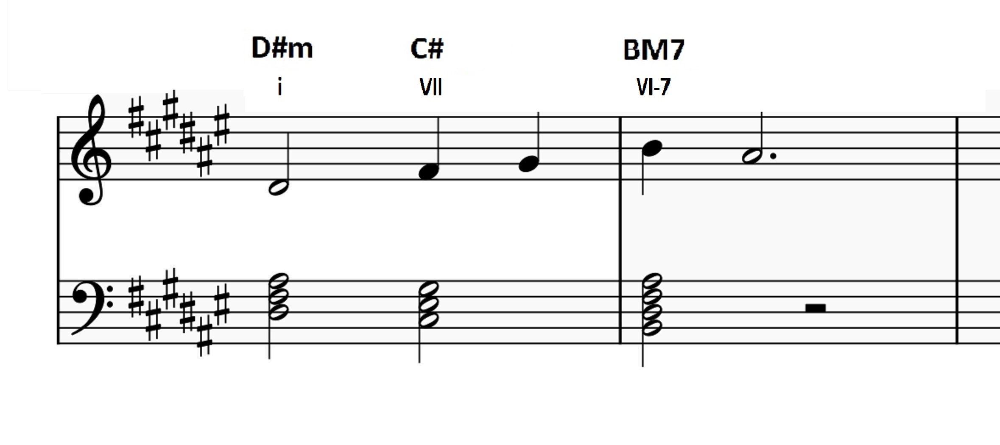

An Analysis of Stjernestøv - AURORA
Posted On 8/2/2013 By Ryan P.
In this article, I will be sharing why I love the song Stjernestøv, as peformed by AURORA. I am very excited to share this song because I immediately fell in love with it after hearing it for the first time. In fact, soon after, I went to my keyboard to try and figure out the melody and the chords, in order to cover it. My light musical analysis of that will also be included throughout the article. Ultimately, I think why I enjoyed it so much, is because I found the song to be quite dynamic, beautiful and it feels the song takes us on a journey.
I don't think AURORA needs too much of an introduction as many already know her. She is a popular Norwegian singer and songwriter, with her most popular songs on Spotify being Runaway and Cure For Me. However unlike those songs, Stjernestøv is not written by her, and is in Norwegian, her native language. This song was written by Gaute Tønder, Ida Sagmo Tvedte, Karianne Lund, and produced by Gaute Tønder, and Olav Waastad, all for a Norwegian Christmas TV series of the same name. [1], [2]
Before continuing this article, definitely go ahead, give the song a listen and watch the music video here.
Beginning with the song itself, I wasn't sure what genre to prescribe it to, but I would call it generally Folk Pop. The song appears to be in the key of D# minor. When I wrote my own sheet music for this song for the piano, the key signature that I found most appropriate was the D# minor key-signature. Finally, though a much weaker point is that the melody of the song begins and ends with a D#, and the chord the song begins with is a D# minor.
The time signature, I found to be best annotated using 4-4 time, and it seems to be at around ~80bpm give or take.
A - B - A - B - A' - A
The song generally follows this verse (A), chorus (B) structure, except at the end, where the A' verse represents a variation from the main melody of A. Overall the song is pretty simple in it's structure, but what gives it some ext5ra added intiruge to me is its interesting chord progression, and its dynamic progression, in the musical sense, and in the narrative the song tells.
The song with what seems to be a violin, or another stringed instrument performing a simple yet beautiful introductory melody. introductory melody, is as follows:
This seems to be the first three chords of the Andalusian Cadence. However, it is definitely not in the same context. In particular, the third chord, which I said was a Major-7th definitely makes changes up the feel. Noramlly, in the Andalusian Cadence, those VII and VI chords have a similar chord quality, but by making one a 7th chord, it definitely makes it sound a bit more mysterious, having both major and minor qualities, in this case the VI chord was changed. Additionally, the Andalusian Cadence is often used more in Flamenco, and other Spanish folk songs, which this song is certainly not an example of. Another interesting think to point out, is that the lowest notes in the chords, move in the opposite direction of the melody. This small counterpoint moment, is definitely apparent in the snog.
After the violin introduction, AURORA begins singing, with a monotone melody, in the first verse, that starts quietly, as if sung in a lullaby. The chords in the back are played very lightly in an arpeggio, with a solid bass-line also being played. It sounds like a keyboard or maybe a Xylophone, and a bass. The sheet music I have created for this is shown below, including the chord progression:
Now if we consider the lyrics that are sung in the first verse, I believe that they fit extremely well with the atmosphere of the first verse.[1]
Watch the storm calm down now
You get up my friend
And you know right away where you want to go
And the road is easy again
When the first chorus comes in, the song slowly crescendos in volume, and the chords move away from the disconnected, arpeggio notes, to being played together, using strong crescendo swelling effects, creating layers in the overall soundscape. To add to this effect of layering, background vocals start coming in providing harmonies, starting in thirds. These harmonies then move in parallel fifths which is quite interesting because they're neither major nor minor, giving it a bit of a mysterious atmosphere in the latter phrase of the chorus. The chorus also interestingly seems to shift into the relative major key, F# major. The chord progression and melody in the first first part of the chorus is as follows:
In the chorus, AURORA sings:[1]
For the star shines bright
Helps you to find your way home to me
the star shines bright
With the chords and the lyrics, the idea of modulating to the relative major key all the more fitting, just seems to fit right as the major key makes the song seem much brighter and more comforting. The idea of returning home, is supposed to comfort us, and by going to the major key, the song does just that.
However, the chorus does vary slightly, in that the chord progression, through the second part of the the song borrows a chord, G# major, which is a result of using the raised 7-th of our original minor scale. This follows the same chord progression as earlier, just instead of ending on B again, the phrase ends on that borrowed chord. Finally, when the song drops the vocal harmonies, and AURORA sings the last phrase of the chorus, the phrase instead begins on the natural G# minor key, before ending once more on the borrowed G# major from the harmonic minor.
In the last line of the chorus, there is a brief pause in the last line of the chorus where much of the built dynamics and layers have been dropped, just before the song really starts to pick up the dynamics in the second verse, starting with the addition of backing drums. The harmonies quickly come back too, and these seem to be in parallel thirds, and fourths. In reality, they're probably parallel 6ths, but I inverted it when playing it on the piano. There is more motion in the vocals adding decoration. Rather than singing the melody flat as is, all of the vocalists add passing trill like notes, passing notes and more. The song is now filled with layers and feels very epic, and cinematic, bringing the listener on a journey. This of course continues into the chorus.
This article will be updated as more of the analysis is complete, but hopefully you learned a bit about the composition of the song!